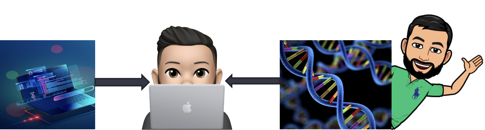

1. Lecture 0: Course Introduction¶
Gittu George, January 4 2022
1.1. Teaching squad¶
1.1.1. Instructor¶

I am Gittu George, Ph.D
I am a Postdoctoral Fellow.
Email Me: ggeorg02@cs.ubc.ca
Office Hours: Tue 2 -3 pm
Research interests are at the intersection of computer science and genomics.
I primarily teach cloud computing courses with MDS, and it is my first time teaching BAIT 580A.
Simon Goring developed this course, and I made my changes/additions to the course.
1.1.2. Teaching Assistants¶
Colby DeLisle: Hey There! I’m a PhD candidate in physics at UBC, and I study quantum information and quantum field theory. Originally from Missouri, USA, I got my BSc in computer science from the University of Missouri before coming to Vancouver.. |
|
Daniel Ramandi: Hey There! I’m a PhD student, working in a Neuroscience lab in the department of Psychiatry, looking at Neural correlates of behavior. I use machine learning to model brain activity and behavior. I’m originally from Iran, and love swimming, cooking and Vancouver! :)) |
|
Elisa Hu: Hi there, my name is Elisa, I am in my last year of undergrad majoring computer science and statistics. I had 2 years TA experience before this course. Besides that, I love eating good food and explore new places. Hope to see you all in the class! |
{kind=link}
{kind=link}
{kind=link}
1.2. Todays Agenda¶
Course Overview
Data management in a big data environment
What is big data?
Which tool to use?
How big is big data?
How to approach big data? – Some guidelines
1.3. Course Overview¶
1.3.1. My Goals for the Course¶
To think critically about databases as part of an analytics workflow
Learn how to design, use and understand the inner working of the SQL based databases
Taking you from level zero to intermediate with the NoSQL databases (document and graph-based databases)
To work with the data to find the tools best suited to answering the questions you pose
To be able to present analytic workflows and decisions clearly to stakeholders
1.3.2. What this course is not about¶
SQL or python programming
Cloud computing
Visualization
1.3.3. Course plan¶
Date |
Topic |
Assessments due |
|---|---|---|
January 4 |
Introduction to Big Data Analytics |
|
January 6 |
Introduction to Cloud Computing |
|
January 11 |
Data Modeling for Business Applications |
Group Assignment: Question Presentation |
January 13 |
SQL for Visualization, constraints & cleaning |
Assign1: Setting up AWS & Linking Jupyter to RDS (Postgres)- Jan 14th |
January 18 |
Faster SQL for Visualization |
|
January 20 |
(de)Normalization & Data Warehousing |
Group Assignment: Data Dictionary and Jupyter Notebook Draft- Jan 21st |
January 25 |
Introduction to NoSQL and Graph Databases |
|
January 27 |
Querying Graph Databases |
Assign2: Data pipelines with Postgres (DDL)- Jan 28th |
February 1 |
Modeling Data with Graphs |
|
February 3 |
Class Conclusions/ Special Topics |
|
February 7 |
Assign3: Setting up & asking questions to Graph Database |
|
February 10 |
Group Assignment: Final Report and Presentation |
{kind=link}
1.3.5. Individual Assignments (50 %)¶
1.3.5.1. Assignment 1 (16 %)¶
{kind=link}
Introduce you to AWS, working with Postgres in a Jupyter notebook
Think about data in the context of a research problem
Setup your AWS account
Launch your database in AWS
Use Python & Jupyter
Get code to download data directly from an FTP
1.3.5.2. Assignment 2 (17 %)¶
Data Pipelines in Jupyter/Postgres
Connect to a database
Generate a query to select data
Produce reasonable plots to explain a feature
1.3.5.3. Assignment 3 (17 %)¶
Six Degrees of Sampling
An introduction to graph databases using the initial Twitter data
Using the graph to answer questions about networks of interaction
Producing interactive plots to represent knowledge
{kind=link}